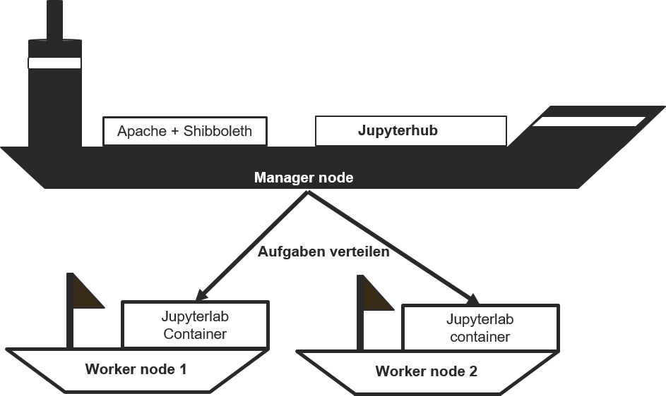

Im letzten Abschnitt haben Sie alle benötigten Rechenressourcen in der bwCloud erstellt und die erforderlichen Sicherheitsgruppen so konfiguriert, dass Ihre VMs miteinander kommunizieren können. In diesem Abschnitt richten Sie einen VM-Cluster innerhalb dieser Ressourcen ein. Dieser Cluster erleichtert die effiziente Verteilung der Rechenaufgaben.
Für Single Kurs Web App wird ein Docker Swarm Cluster benötigt. Dieser Cluster besteht aus zwei Rollen: dem Manager Node und dem Worker Node. Während die Web-Anwendungen auf dem Manager Node bereitgestellt werden, verteilen sich die meisten Rechenaufgaben auf die Worker Nodes. Stellen Sie sich vor, ein Student loggt sich in eine Web-Anwendung ein und möchte direkt mit dem Programmieren beginnen. Der Manager Node startet dann einen Docker Container auf einem Worker Node, sodass der Student die Rechenressourcen dort nutzen kann, um seine Programme auszuführen. 
Dieses Abschnitt gliedert sich in folgende Abschnitte: